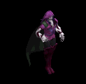
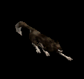
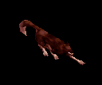
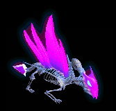
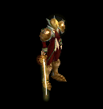
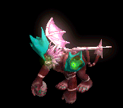

職業鎧 をドロップするmob一覧
一覧ページへ
| 大型骸骨 | アンデット | 一般1 | |||||||
|---|---|---|---|---|---|---|---|---|---|
 | 鈍器(410) | 両手剣(270) | 弾(410) | 職業鎧(230) | 冠(210) | 能力向上1(160) | 鎌(270) | ||
| 巨人骸骨 | アンデット | 一般2 | |||||||
 | 鈍器(380) | 牙(250) | 矢(380) | 職業鎧(210) | 指輪(190) | 能力向上1(150) | 双剣(250) | 魔弾(380) | |
| 骸骨騎士 | アンデット | 一般3 | |||||||
 | 鈍器(360) | スリング(240) | 矢(360) | 職業鎧(200) | 爪(180) | 能力向上1(140) | 魔弾(360) | ||
| ヴァンパイア | アンデット | 一般3 | |||||||
 | 鞭(360) | 牙(240) | イベント(360) | 職業鎧(200) | 指輪(180) | 特殊1(140) | 双剣(240) | ||
| 上級ヴァンパイア | アンデット | セミ1 | |||||||
|  | 鞭(390) | 笛(260) | イベント(390) | 職業鎧(220) | 指輪(200) | 特殊1(160) | |||
| 古代ヴァンパイア | アンデット | セミ2 | |||||||
 | 鞭(420) | 牙(280) | 弾(420) | 職業鎧(230) | 指輪(210) | 特殊1(170) | 双剣(280) | ||
| ドラキュラ | アンデット | ボス1 | |||||||
 | 鞭(470) | 笛(310) | cP回復(470) | 職業鎧(260) | 指輪(240) | 特殊1(190) | |||
| ノースフェラトゥ | アンデット | ボス2 | |||||||
 | 鞭(490) | 牙(330) | HP回復(490) | 職業鎧(270) | 指輪(250) | 特殊1(200) | 双剣(330) | ||
| シーフ | 人間 | 一般1 | |||||||
 | 投擲(410) | ステッキ(270) | イベント(410) | 職業鎧(230) | 指輪(210) | 特殊1(160) | |||
| ローグ | 人間 | 一般2 | |||||||
 | 投擲(380) | ステッキ(250) | 鍵(10) | 職業鎧(210) | 爪(190) | 特殊1(150) | |||
| スナッチャー | 人間 | 一般3 | |||||||
 | 投擲(360) | ステッキ(140) | 鍵(30) | 職業鎧(200) | 爪(180) | 特殊1(140) | |||
| ロバー | 人間 | セミ1 | |||||||
 | 投擲(390) | ステッキ(260) | 弾(390) | 職業鎧(220) | 爪(200) | 特殊1(160) | |||
| アサシン | 人間 | セミ2 | |||||||
 | 投擲(420) | ステッキ(280) | 矢(420) | 職業鎧(230) | 爪(210) | 特殊1(170) | 魔弾(420) | ||
| ソーサラー | 人間 | セミ1 | |||||||
 | 杖(390) | スリング(260) | 状態異常回復2(100) | 職業鎧(220) | 首(200) | 能力向上2(160) | 本(390) | ||
| 偽伝道師 | 人間 | 一般2 | |||||||
 | 鈍器(380) | 翼(250) | 盾(380) | 職業鎧(210) | 冠(190) | 十字架(180) | 水晶(250) | ||
| エクソシスト | 人間 | 一般3 | |||||||
 | 鈍器(360) | 翼(240) | 状態異常回復2(90) | 職業鎧(200) | 冠(180) | 十字架(190) | 水晶(240) | ||
| 偽聖職者 | 人間 | 一般4 | |||||||
 | 鈍器(300) | 翼(200) | 盾(300) | 職業鎧(170) | 首(150) | 十字架(200) | 水晶(200) | ||
| ダークプリースト | 人間 | セミ2 | |||||||
 | 鈍器(420) | 翼(280) | 状態異常回復2(110) | 職業鎧(230) | 首(210) | 十字架(210) | 水晶(280) | ||
| リザードライダー | 悪魔 | 一般2 | |||||||
 | スリング(380) | 槍(250) | イベント(380) | 職業鎧(210) | 首(190) | 能力向上2(150) | 箒(250) | ||
| リザードチャージ | 悪魔 | 一般3 | |||||||
 | ステッキ(360) | 槍(240) | イベント(360) | 職業鎧(200) | 首(180) | 能力向上2(140) | 箒(240) | ||
| リザードトルーパ | 悪魔 | 一般4 | |||||||
 | ステッキ(300) | 弓(200) | 矢(300) | 職業鎧(170) | 首(150) | 能力向上2(120) | 銃(200) | 魔弾(300) | |
| ナーガナイト | 悪魔 | セミ2 | |||||||
 | ステッキ(420) | 弓(280) | HP回復(420) | 職業鎧(230) | 首(210) | 能力向上2(170) | 銃(280) | ||
| ナーガランサー | 悪魔 | ボス2 | |||||||
 | スリング(490) | 弓(330) | 矢(490) | 職業鎧(270) | 首(250) | 能力向上2(200) | 銃(330) | 魔弾(490) | |
| ブレイマ | 悪魔 | セミ3 | |||||||
 | 槍(450) | 片手剣(300) | 弾(450) | 職業鎧(250) | 爪(230) | 特殊1(180) | クロー(300) | 箒(450) | |
| 赤い悪魔 | 悪魔 | ボス3 | |||||||
 | none(510) | 両手剣(340) | 鍵(510) | 職業鎧(280) | 首(260) | 能力向上1(200) | 鎌(340) | ||
| 野良犬 | 動物 | 一般1 | |||||||
|  | 牙(410) | 笛(270) | 鍵(10) | 職業鎧(230) | 槍投擲機(210) | 特殊1(160) | 双剣(410) | ||
| レッドアイ警備犬 | 動物 | セミ1 | |||||||
|  | 牙(390) | 鞭(260) | 鍵(30) | 職業鎧(220) | 槍投擲機(200) | 特殊1(160) | 双剣(390) | ||
| ヘルハウンド | 動物 | ボス2 | |||||||
 | 牙(490) | 両手剣(330) | 鍵(50) | 職業鎧(270) | 槍投擲機(250) | 特殊1(200) | 鎌(330) | 双剣(490) | |
| 大型モグラ | 動物 | 一般3 | |||||||
 | 両手剣(360) | ステッキ(240) | 弾(360) | 職業鎧(200) | 指輪(180) | 能力向上1(140) | 鎌(360) | ||
| ディガー | 動物 | セミ1 | |||||||
 | 弓(390) | スリング(260) | 弾(390) | 職業鎧(220) | 指輪(200) | 能力向上1(160) | 銃(390) | ||
| ロードブローカー | 動物 | ボス1 | |||||||
 | 笛(470) | ステッキ(310) | 弾(470) | 職業鎧(260) | 指輪(240) | 能力向上1(190) | |||
| 大型骸骨Ex | アンデット | 一般1 | |||||||
| 鈍器(410) | 両手剣(270) | 弾(410) | 職業鎧(230) | 冠(210) | 能力向上1(160) | 鎌(270) | ||
| 巨人骸骨Ex | アンデット | 一般2 | |||||||
| 鈍器(380) | 牙(250) | 矢(380) | 職業鎧(210) | 指輪(190) | 能力向上1(150) | 双剣(250) | 魔弾(380) | |
| 骸骨騎士Ex | アンデット | 一般3 | |||||||
| 鈍器(360) | スリング(240) | 矢(360) | 職業鎧(200) | 爪(180) | 能力向上1(140) | 魔弾(360) | ||
| ヴァンパイアEx | アンデット | 一般3 | |||||||
| 鞭(360) | 牙(240) | イベント(360) | 職業鎧(200) | 指輪(180) | ブローチ(200) | 双剣(240) | ||
| 上級ヴァンパイアEx | アンデット | セミ1 | |||||||
| 鞭(450) | 笛(300) | イベント(450) | 職業鎧(250) | 指輪(230) | ブローチ(250) | ||||
| 古代ヴァンパイアEx | アンデット | セミ2 | |||||||
| 鞭(650) | 牙(430) | 弾(650) | 職業鎧(360) | 指輪(330) | ブローチ(300) | 双剣(430) | ||
| ドラキュラEx | アンデット | ボス1 | |||||||
| 鞭(1200) | 笛(800) | cP回復(1200) | 職業鎧(670) | 指輪(600) | ブローチ(400) | |||
| ノースフェラトゥEx | アンデット | ボス2 | |||||||
| 鞭(2000) | 牙(1330) | HP回復(2000) | 職業鎧(1110) | 指輪(1000) | ブローチ(500) | 双剣(1330) | ||
| シーフEx | 人間 | 一般1 | |||||||
| 投擲(410) | ステッキ(270) | イベント(410) | 職業鎧(230) | 指輪(210) | 特殊1(160) | |||
| ローグEx | 人間 | 一般2 | |||||||
| 投擲(380) | ステッキ(250) | 鍵(20) | 職業鎧(210) | 爪(190) | 特殊1(150) | |||
| スナッチャーEx | 人間 | 一般3 | |||||||
| 投擲(360) | ステッキ(240) | 鍵(30) | 職業鎧(200) | 爪(180) | 特殊1(140) | |||
| ロバーEx | 人間 | セミ1 | |||||||
| 投擲(450) | ステッキ(300) | 弾(450) | 職業鎧(250) | 爪(230) | 特殊1(180) | |||
| アサシンEx | 人間 | セミ2 | |||||||
| 投擲(650) | ステッキ(430) | 矢(650) | 職業鎧(360) | 爪(330) | 特殊1(260) | 魔弾(650) | ||
| ソーサラーEx | 人間 | セミ1 | |||||||
| 杖(450) | スリング(300) | 状態異常回復2(110) | 職業鎧(250) | 首(230) | 能力向上2(180) | 本(450) | ||
| 偽伝道師Ex | 人間 | 一般2 | |||||||
| 鈍器(380) | 翼(250) | 盾(380) | 職業鎧(210) | 冠(190) | 十字架(180) | 水晶(250) | ||
| エクソシストEx | 人間 | 一般3 | |||||||
| 鈍器(360) | 翼(240) | 状態異常回復2(90) | 職業鎧(200) | 冠(180) | 十字架(190) | 水晶(240) | ||
| 偽聖職者Ex | 人間 | 一般4 | |||||||
| 鈍器(300) | 翼(200) | 盾(300) | 職業鎧(170) | 首(150) | 十字架(200) | 水晶(200) | ||
| ダークプリーストEx | 人間 | セミ2 | |||||||
| 鈍器(650) | 翼(430) | 状態異常回復2(160) | 職業鎧(360) | 首(330) | 十字架(210) | 水晶(430) | ||
| リザードライダーEx | 悪魔 | 一般2 | |||||||
| スリング(380) | 槍(250) | イベント(380) | 職業鎧(210) | 首(190) | 能力向上2(150) | 箒(250) | ||
| リザードチャージEx | 悪魔 | 一般3 | |||||||
| ステッキ(360) | 槍(240) | イベント(360) | 職業鎧(200) | 首(180) | 能力向上2(140) | 箒(240) | ||
| リザードトルーパEx | 悪魔 | 一般4 | |||||||
| ステッキ(300) | 弓(200) | 矢(300) | 職業鎧(170) | 首(150) | 能力向上2(120) | 銃(200) | 魔弾(300) | |
| ナーガナイトEx | 悪魔 | セミ2 | |||||||
| ステッキ(650) | 弓(430) | HP回復(650) | 職業鎧(360) | 首(330) | 能力向上2(260) | 銃(430) | ||
| ナーガランサーEx | 悪魔 | ボス2 | |||||||
| スリング(2000) | 弓(1330) | 矢(2000) | 職業鎧(1110) | 首(1000) | 能力向上2(800) | 銃(1330) | 魔弾(2000) | |
| ブレイマEx | 悪魔 | セミ3 | |||||||
| 槍(800) | 片手剣(530) | 弾(800) | 職業鎧(440) | 爪(400) | 特殊1(320) | クロー(530) | 箒(800) | |
| 赤い悪魔Ex | 悪魔 | ボス3 | |||||||
| none(2800) | 両手剣(1870) | 鍵(700) | 職業鎧(1560) | 首(1400) | 能力向上1(1120) | 鎌(1870) | ||
| 野良犬Ex | 動物 | 一般1 | |||||||
| 牙(410) | 笛(270) | 鍵(20) | 職業鎧(230) | 槍投擲機(210) | 特殊1(160) | 双剣(410) | |||
| レッドアイ警備犬Ex | 動物 | セミ1 | |||||||
| 牙(450) | 鞭(300) | 鍵(60) | 職業鎧(250) | 槍投擲機(230) | 特殊1(180) | 双剣(450) | |||
| ヘルハウンドEx | 動物 | ボス2 | |||||||
| 牙(2000) | 両手剣(1330) | 鍵(130) | 職業鎧(1110) | 槍投擲機(1000) | 特殊1(800) | 鎌(1330) | 双剣(2000) | |
| 大型モグラEx | 動物 | 一般3 | |||||||
| 両手剣(360) | ステッキ(240) | 弾(360) | 職業鎧(200) | 指輪(180) | 能力向上1(140) | 鎌(360) | ||
| ディガーEx | 動物 | セミ1 | |||||||
| 弓(450) | スリング(300) | 弾(450) | 職業鎧(250) | 指輪(230) | 能力向上1(180) | 銃(450) | ||
| ロードブローカーEx | 動物 | ボス1 | |||||||
| 笛(1200) | ステッキ(800) | 弾(1200) | 職業鎧(670) | 指輪(600) | 能力向上1(480) | |||
| パンEx | 神獣 | 一般1 | |||||||
 | 笛(410) | 槍(270) | 状態異常回復1(410) | 職業鎧(230) | 槍投擲機(210) | 宝石(160) | 箒(270) | ||
| サティロスEx | 神獣 | 一般4 | |||||||
 | 笛(300) | 槍(200) | 状態異常回復1(300) | 職業鎧(170) | 槍投擲機(150) | 宝石(120) | 箒(200) | ||
| ケンタウロスEx | 神獣 | セミ1 | |||||||
 | 笛(450) | 槍(300) | 状態異常回復1(450) | 職業鎧(250) | 槍投擲機(230) | 宝石(180) | 箒(300) | ||
| ケンタウロス騎士Ex | 神獣 | セミ2 | |||||||
 | 笛(650) | 槍(430) | 状態異常回復1(650) | 職業鎧(360) | 槍投擲機(330) | 宝石(260) | 箒(430) | ||
| ダークエルフ王Ex | 神獣 | ボス2 | |||||||
 | 笛(2000) | 槍(1330) | 状態異常回復1(2000) | 職業鎧(1110) | 槍投擲機(1000) | 宝石(800) | 箒(1330) | ||
| ダークファイアEx | 神獣 | ボス1 | |||||||
 | 槍(1200) | 翼(800) | HP回復(1200) | 職業鎧(670) | 指輪(600) | 特殊1(480) | 箒(1200) | 水晶(800) | |
| 大型骸骨Zin | アンデット | 一般1 | |||||||
| 鈍器(1210) | 両手剣(810) | 弾(1210) | 職業鎧(670) | 冠(610) | 能力向上1(480) | 鎌(810) | ||
| 巨人骸骨Zin | アンデット | 一般2 | |||||||
| 鈍器(1380) | 牙(920) | 矢(1380) | 職業鎧(770) | 指輪(690) | 能力向上1(550) | 双剣(920) | 魔弾(1380) | |
| 骸骨騎士Zin | アンデット | 一般3 | |||||||
| 鈍器(1560) | スリング(1040) | 矢(1560) | 職業鎧(870) | 爪(780) | 能力向上1(620) | 魔弾(1560) | ||
| ヴァンパイアZin | アンデット | 一般3 | |||||||
| 鞭(1560) | 牙(1040) | イベント(1560) | 職業鎧(870) | 指輪(780) | ブローチ(200) | 双剣(1040) | ||
| 上級ヴァンパイアZin | アンデット | セミ1 | |||||||
| 鞭(650) | 笛(430) | イベント(650) | 職業鎧(360) | 指輪(330) | ブローチ(250) | ||||
| 古代ヴァンパイアZin | アンデット | セミ2 | |||||||
| 鞭(750) | 牙(500) | 弾(750) | 職業鎧(420) | 指輪(380) | ブローチ(300) | 双剣(500) | ||
| ドラキュラZin | アンデット | ボス1 | |||||||
| 鞭(1000) | 笛(670) | cP回復(1000) | 職業鎧(560) | 指輪(500) | ブローチ(400) | |||
| ノースフェラトゥZin | アンデット | ボス2 | |||||||
| 鞭(1100) | 牙(730) | HP回復(1100) | 職業鎧(610) | 指輪(550) | ブローチ(500) | 双剣(730) | ||
| シーフZin | 人間 | 一般1 | |||||||
| 投擲(1210) | ステッキ(810) | イベント(1210) | 職業鎧(670) | 指輪(610) | 特殊1(480) | |||
| ローグZin | 人間 | 一般2 | |||||||
| 投擲(1380) | ステッキ(920) | 鍵(110) | 職業鎧(770) | 爪(690) | 特殊1(550) | |||
| スナッチャーZin | 人間 | 一般3 | |||||||
| 投擲(1560) | ステッキ(1040) | 鍵(170) | 職業鎧(870) | 爪(780) | 特殊1(620) | |||
| ロバーZin | 人間 | セミ1 | |||||||
| 投擲(650) | ステッキ(430) | 弾(650) | 職業鎧(360) | 爪(330) | 特殊1(260) | |||
| アサシンZin | 人間 | セミ2 | |||||||
| 投擲(750) | ステッキ(500) | 矢(750) | 職業鎧(420) | 爪(380) | 特殊1(300) | 魔弾(750) | ||
| ソーサラーZin | 人間 | セミ1 | |||||||
| 杖(650) | スリング(430) | 状態異常回復2(160) | 職業鎧(360) | 首(330) | 能力向上2(260) | 本(650) | ||
| 偽伝道師Zin | 人間 | 一般2 | |||||||
| 鈍器(1380) | 翼(920) | 盾(1380) | 職業鎧(770) | 冠(690) | 十字架(180) | 水晶(920) | ||
| エクソシストZin | 人間 | 一般3 | |||||||
| 鈍器(1560) | 翼(1040) | 状態異常回復2(390) | 職業鎧(870) | 冠(780) | 十字架(190) | 水晶(1040) | ||
| 偽聖職者Zin | 人間 | 一般4 | |||||||
| 鈍器(1200) | 翼(800) | 盾(1200) | 職業鎧(670) | 首(600) | 十字架(200) | 水晶(800) | ||
| ダークプリーストZin | 人間 | セミ2 | |||||||
| 鈍器(750) | 翼(500) | 状態異常回復2(190) | 職業鎧(420) | 首(380) | 十字架(210) | 水晶(500) | ||
| リザードライダーZin | 悪魔 | 一般2 | |||||||
| スリング(1380) | 槍(920) | イベント(1380) | 職業鎧(770) | 首(690) | 能力向上2(550) | 箒(920) | ||
| リザードチャージZin | 悪魔 | 一般3 | |||||||
| ステッキ(1560) | 槍(1040) | イベント(1560) | 職業鎧(870) | 首(780) | 能力向上2(620) | 箒(1040) | ||
| リザードトルーパZin | 悪魔 | 一般4 | |||||||
| ステッキ(1200) | 弓(800) | 矢(1200) | 職業鎧(670) | 首(600) | 能力向上2(480) | 銃(800) | 魔弾(1200) | |
| ナーガナイトZin | 悪魔 | セミ2 | |||||||
| ステッキ(750) | 弓(500) | HP回復(750) | 職業鎧(420) | 首(380) | 能力向上2(300) | 銃(500) | ||
| ナーガランサーZin | 悪魔 | ボス2 | |||||||
| スリング(1100) | 弓(730) | 矢(1100) | 職業鎧(610) | 首(550) | 能力向上2(440) | 銃(730) | 魔弾(1100) | |
| ブレイマZin | 悪魔 | セミ3 | |||||||
| 槍(900) | 片手剣(600) | 弾(900) | 職業鎧(500) | 爪(450) | 特殊1(360) | クロー(600) | 箒(900) | |
| 赤い悪魔Zin | 悪魔 | ボス3 | |||||||
| none(1200) | 両手剣(800) | 鍵(1200) | 職業鎧(670) | 首(600) | 能力向上1(480) | 鎌(800) | ||
| 野良犬Zin | 動物 | 一般1 | |||||||
| 牙(1210) | 笛(810) | 鍵(30) | 職業鎧(670) | 槍投擲機(610) | 特殊1(480) | 双剣(1210) | |||
| レッドアイ警備犬Zin | 動物 | セミ1 | |||||||
| 牙(650) | 鞭(430) | 鍵(50) | 職業鎧(360) | 槍投擲機(330) | 特殊1(260) | 双剣(650) | |||
| ヘルハウンドZin | 動物 | ボス2 | |||||||
| 牙(1100) | 両手剣(730) | 鍵(70) | 職業鎧(610) | 槍投擲機(550) | 特殊1(440) | 鎌(730) | 双剣(1100) | |
| 大型モグラZin | 動物 | 一般3 | |||||||
| 両手剣(1560) | ステッキ(1040) | 弾(1560) | 職業鎧(870) | 指輪(780) | 能力向上1(620) | 鎌(1560) | ||
| ディガーZin | 動物 | セミ1 | |||||||
| 弓(650) | スリング(430) | 弾(650) | 職業鎧(360) | 指輪(330) | 能力向上1(260) | 銃(650) | ||
| ロードブローカーZin | 動物 | ボス1 | |||||||
| 笛(1000) | ステッキ(670) | 弾(1000) | 職業鎧(560) | 指輪(500) | 能力向上1(400) | |||
| パンZin | 神獣 | 一般1 | |||||||
| 笛(1210) | 槍(810) | 状態異常回復1(1210) | 職業鎧(670) | 槍投擲機(610) | 宝石(480) | 箒(810) | ||
| サティロスZin | 神獣 | 一般4 | |||||||
| 笛(1200) | 槍(800) | 状態異常回復1(1200) | 職業鎧(670) | 槍投擲機(600) | 宝石(480) | 箒(800) | ||
| ケンタウロスZin | 神獣 | セミ1 | |||||||
| 笛(650) | 槍(430) | 状態異常回復1(650) | 職業鎧(360) | 槍投擲機(330) | 宝石(260) | 箒(430) | ||
| ケンタウロス騎士Zin | 神獣 | セミ2 | |||||||
| 笛(750) | 槍(500) | 状態異常回復1(750) | 職業鎧(420) | 槍投擲機(380) | 宝石(300) | 箒(500) | ||
| ケンタウロス王Zin | 神獣 | ボス2 | |||||||
| 笛(1100) | 槍(730) | 状態異常回復1(1100) | 職業鎧(610) | 槍投擲機(550) | 宝石(440) | 箒(730) | ||
| ダークファイアZin | 神獣 | ボス1 | |||||||
| 槍(1000) | 翼(670) | HP回復(1000) | 職業鎧(560) | 指輪(500) | 特殊1(400) | 箒(1000) | 水晶(670) | |
 | 弓(1560) | 片手剣(1040) | 矢(1560) | グローブ(900) | 手首(780) | 腕刺青(170) | クロー(1040) | 銃(1560) | 魔弾(1560) |
| ジャイアント骸骨1 Zin | アンデット | セミ1 | |||||||
 | 冠(50) | 鈍器(90) | 牙(160) | 職業鎧(230) | 状態異常回復1(300) | 杖(350) | 本(350) | 双剣(160) | |
| ジャイアント骸骨2 Zin | アンデット | セミ2 | |||||||
 | 能力向上2(80) | 職業鎧(140) | 牙(250) | 職業鎧(360) | ステッキ(470) | イベント(550) | 双剣(250) | ||
| ジャイアント骸骨4 Zin | アンデット | ボス2 | |||||||
 | 杖(270) | マント(450) | 牙(810) | 職業鎧(1170) | 肩刺青(1530) | 杖(1800) | 本(270) | 双剣(810) | |
| バイキングヘッド Zin | アンデット | 一般4 | |||||||
 | 鍵(30) | 鈍器(50) | 牙(90) | 職業鎧(130) | 状態異常回復1(170) | イベント(200) | 双剣(90) | ||
| バイキングヘッド2 Zin | アンデット | ボス1 | |||||||
 | 冠(150) | 鈍器(250) | 帰還(450) | 職業鎧(650) | 肩刺青(850) | HP回復(1000) | |||
| バイキングヘッド3 Zin | アンデット | ボス2 | |||||||
 | 能力向上2(270) | 鈍器(450) | 牙(810) | 職業鎧(1170) | ステッキ(1530) | 杖(1800) | 本(1800) | 双剣(810) | |
| バイキングヘッド4 Zin | アンデット | ボス3 | |||||||
 | 冠(360) | cP回復(600) | 宝石(1080) | 職業鎧(1560) | ステッキ(2040) | 杖(2400) | 本(2400) | ||
| デスマスク Zin | アンデット | セミ1 | |||||||
 | 宝石(50) | 宝石(90) | 牙(160) | 職業鎧(230) | 肩刺青(300) | 杖(350) | 本(350) | 双剣(160) | |
| デスマスク1 Zin | アンデット | セミ3 | |||||||
 | 職業鎧(110) | 職業鎧(180) | 腕刺青(320) | 十字架(460) | ステッキ(600) | 杖(700) | 本(700) | ||
| デスマスク2 Zin | アンデット | ボス1 | |||||||
 | 冠(150) | 鈍器(250) | 牙(450) | 職業鎧(650) | ステッキ(850) | 職業鎧(1000) | 双剣(450) | ||
| デスマスク3 Zin | アンデット | ボス2 | |||||||
 | 鍵(270) | 状態異常回復2(450) | 十字架(810) | 職業鎧(1170) | 状態異常回復1(1530) | HP回復(1800) | |||
| デスマスク4 Zin | アンデット | ボス3 | |||||||
 | 冠(360) | 鈍器(600) | 牙(1080) | 職業鎧(1560) | ステッキ(2040) | 杖(2400) | 本(2400) | 双剣(1080) | |
| アンデッドロック3 Zin | アンデット | ボス2 | |||||||
 | 宝石(270) | マント(450) | 職業鎧(810) | 手首(1170) | 矢(1530) | グローブ(1800) | 魔弾(1530) | ||
| ボーンキメラZin | アンデット | 一般4 | |||||||
 | 片手剣(30) | 首(50) | 牙(90) | 職業鎧(130) | 状態異常回復1(170) | 兜・帽子(200) | クロー(30) | 双剣(90) | |
| ボーンキメラ2 Zin | アンデット | セミ2 | |||||||
 | 片手剣(80) | 首(140) | 牙(250) | 職業鎧(360) | 槍投擲機(470) | 兜・帽子(550) | クロー(80) | 双剣(250) | |
| ボーンキメラ4 Zin | アンデット | ボス2 | |||||||
 | 片手剣(270) | 状態異常回復2(450) | 牙(810) | 職業鎧(1170) | 槍投擲機(1530) | 兜・帽子(1800) | クロー(270) | 双剣(810) | |
| ブルーエリゲイト1 Zin | アンデット | セミ2 | |||||||
|  | 宝石(80) | 首(140) | 牙(250) | 職業鎧(360) | 槍投擲機(470) | イベント(550) | 双剣(250) | ||
| ブルーエリゲイト2 Zin | アンデット | セミ3 | |||||||
 | 片手剣(110) | 状態異常回復2(180) | cP回復(320) | 職業鎧(460) | 槍投擲機(600) | 兜・帽子(700) | クロー(110) | ||
| ブルーエリゲイト3 Zin | アンデット | ボス2 | |||||||
 | 職業鎧(270) | 首(450) | 牙(810) | 十字架(1170) | 状態異常回復1(1530) | 兜・帽子(1800) | 双剣(810) | ||
| ブルーエリゲイト4 Zin | アンデット | ボス3 | |||||||
 | 片手剣(360) | 首(600) | 腕刺青(1080) | 職業鎧(1560) | 槍投擲機(2040) | 兜・帽子(2400) | クロー(360) | ||
| 装甲ボーンキメラ Zin | アンデット | 一般4 | |||||||
 | 片手剣(30) | 首(50) | 牙(90) | 職業鎧(130) | 状態異常回復1(170) | HP回復(200) | クロー(30) | 双剣(90) | |
| 装甲ボーンキメラ1 Zin | アンデット | セミ1 | |||||||
 | 片手剣(50) | 首(90) | 帰還(160) | 職業鎧(230) | 肩刺青(300) | イベント(350) | クロー(50) | ||
| 装甲ボーンキメラ3 Zin | アンデット | ボス2 | |||||||
 | 片手剣(270) | 状態異常回復2(450) | 腕刺青(810) | 職業鎧(1170) | 槍投擲機(1530) | 兜・帽子(1800) | クロー(270) | ||
| エルフ貴族2 Zin | 人間 | セミ3 | |||||||
 | 宝石(180) | イヤリング(530) | 足(350) | 職業鎧(280) | 槍投擲機(70) | 宝石(110) | |||
| エルフガーディア3 Zin | 人間 | ボス2 | |||||||
|  | 片手剣(450) | イヤリング(1350) | 弾(900) | 能力向上1(720) | 肩刺青(180) | 職業鎧(270) | クロー(450) | ||
| ならず者2 Zin | 人間 | セミ1 | |||||||
 | 投擲(90) | 職業鎧(260) | 牙(180) | 能力向上1(140) | 弓(40) | 盾(50) | 双剣(180) | 銃(40) | |
| 仙人 Zin | 人間 | ボス3 | |||||||
 | 投擲(600) | 職業鎧(1800) | 宝石(1200) | 笛(960) | 弓(240) | 盾(360) | 銃(240) | ||
| 逃亡魔法師1 Zin | 人間 | 一般4 | |||||||
 | 両手剣(50) | ブローチ(150) | cP回復(100) | 職業鎧(80) | 状態異常回復1(20) | 杖(30) | 鎌(50) | 本(30) | |
| ゴールデンマスク2 Zin | 悪魔 | セミ3 | |||||||
 | 片手剣(460) | 爪(560) | 職業鎧(230) | 十字架(140) | 矢(70) | 兜・帽子(40) | クロー(460) | 魔弾(70) | |
| 死神3 Zin | 悪魔 | ボス2 | |||||||
 | 能力向上2(1170) | 職業鎧(1440) | 両手剣(590) | 能力向上1(360) | 肩刺青(180) | グローブ(90) | 鎌(590) | ||
| 邪臣3 Zin | 悪魔 | ボス2 | |||||||
 | 指輪(1170) | 職業鎧(1440) | 帰還(590) | 手首(360) | 杖(180) | イベント(90) | 本(180) | ||
| バッタ悪魔2 Zin | 悪魔 | セミ3 | |||||||
 | 投擲(460) | 鈍器(560) | 腕刺青(230) | 槍(140) | 腰(70) | 職業鎧(40) | 箒(140) | ||
| ビッグモンキー1 Zin | 動物 | セミ1 | |||||||
 | 能力向上2(120) | ブローチ(90) | 腕刺青(70) | 職業鎧(50) | 状態異常回復1(40) | イベント(20) | |||
| ルーンモンキー Zin | 動物 | ボス1 | |||||||
 | 杖(350) | イヤリング(250) | 牙(200) | 職業鎧(150) | 矢(100) | HP回復(50) | 本(350) | 双剣(200) | 魔弾(100) |
| マウンテン戦士 Zin | 動物 | 一般4 | |||||||
 | 冠(70) | イヤリング(50) | 牙(40) | 職業鎧(30) | 矢(20) | イベント(10) | 双剣(40) | 魔弾(20) | |
| マウンテン戦士2 Zin | 動物 | セミ3 | |||||||
 | 冠(250) | ブローチ(180) | 宝石(140) | 職業鎧(110) | 状態異常回復1(70) | 翼(40) | 水晶(40) | ||
| マウンテン戦士3 Zin | 動物 | ボス2 | |||||||
 | 冠(630) | イヤリング(450) | 帰還(360) | 職業鎧(270) | 矢(180) | 翼(90) | 水晶(90) | 魔弾(180) | |
| ウィングコング1 Zin | 動物 | セミ2 | |||||||
 | 杖(190) | イヤリング(140) | 能力向上2(110) | 職業鎧(80) | 矢(60) | 翼(30) | 本(190) | 水晶(30) | 魔弾(60) |
| ウィングコング3 Zin | 動物 | ボス2 | |||||||
|  | 能力向上2(630) | 状態異常回復2(450) | 牙(360) | 職業鎧(270) | 矢(180) | 翼(90) | 双剣(360) | 水晶(90) | 魔弾(180) |
| ウィングコング4 Zin | 動物 | ボス3 | |||||||
 | 冠(840) | イヤリング(600) | 宝石(480) | 職業鎧(360) | 矢(240) | 翼(120) | 水晶(120) | 魔弾(240) | |
| 魔術師 | 人間 | セミ1 | |||||||
| 杖(390) | スリング(260) | 状態異常回復2(100) | 職業鎧(220) | 首(200) | 能力向上2(160) | 本(390) | ||
| 魔術師 Ex | 人間 | セミ1 | |||||||
| 杖(450) | スリング(300) | 状態異常回復2(110) | 職業鎧(250) | 首(230) | 能力向上2(180) | 本(450) | ||
| 黒い炎 Ex | 神獣 | ボス1 | |||||||
| 槍(1200) | 翼(800) | HP回復(1200) | 職業鎧(670) | 指輪(600) | 特殊1(480) | 箒(1200) | 水晶(800) | |
| ヴァンパイア | アンデット | 一般3 | |||||||
| 鞭(360) | 牙(240) | イベント(360) | 職業鎧(200) | 指輪(180) | 特殊1(140) | 双剣(240) | ||
| ヴァンパイア男爵 | アンデット | セミ1 | |||||||
| 鞭(390) | 笛(260) | イベント(390) | 職業鎧(220) | 指輪(200) | 特殊1(160) | ||||
| ヴァンパイア伯爵 | アンデット | セミ2 | |||||||
| 鞭(420) | 牙(280) | 弾(420) | 職業鎧(230) | 指輪(210) | 特殊1(170) | 双剣(280) | ||
| ヴァンパイア公爵 | アンデット | ボス1 | |||||||
| 鞭(470) | 笛(310) | cP回復(470) | 職業鎧(260) | 指輪(240) | 特殊1(190) | |||
| ヴァンパイア君主 | アンデット | ボス2 | |||||||
| 鞭(490) | 牙(330) | HP回復(490) | 職業鎧(270) | 指輪(250) | 特殊1(200) | 双剣(330) | ||
| ヴァンパイア Ex | アンデット | 一般3 | |||||||
| 鞭(360) | 牙(240) | イベント(360) | 職業鎧(200) | 指輪(180) | ブローチ(200) | 双剣(240) | ||
| ヴァンパイア男爵 Ex | アンデット | セミ1 | |||||||
| 鞭(450) | 笛(300) | イベント(450) | 職業鎧(250) | 指輪(230) | ブローチ(250) | ||||
| ヴァンパイア伯爵 Ex | アンデット | セミ2 | |||||||
| 鞭(650) | 牙(430) | 弾(650) | 職業鎧(360) | 指輪(330) | ブローチ(300) | 双剣(430) | ||
| ヴァンパイア公爵 Ex | アンデット | ボス1 | |||||||
| 鞭(1200) | 笛(800) | cP回復(1200) | 職業鎧(670) | 指輪(600) | ブローチ(400) | |||
| ヴァンパイア君主 Ex | アンデット | ボス2 | |||||||
| 鞭(2000) | 牙(1330) | HP回復(2000) | 職業鎧(1110) | 指輪(1000) | ブローチ(500) | 双剣(1330) | ||
| デーモン将軍 | 悪魔 | セミ3 | |||||||
| 槍(450) | 片手剣(300) | 弾(450) | 職業鎧(250) | 爪(230) | 特殊1(180) | クロー(300) | 箒(450) | |
| デーモン将軍 Ex | 悪魔 | セミ3 | |||||||
| 槍(800) | 片手剣(530) | 弾(800) | 職業鎧(440) | 爪(400) | 特殊1(320) | クロー(530) | 箒(800) | |
| ボーンドラゴン Zin | アンデット | 一般4 | |||||||
| 片手剣(30) | 首(50) | 牙(90) | 職業鎧(130) | 状態異常回復1(170) | 兜・帽子(200) | クロー(30) | 双剣(90) | |
| エルフの猟犬 Zin | 動物 | セミ1 | |||||||
| 牙(650) | 鞭(430) | 鍵(50) | 職業鎧(360) | 槍投擲機(330) | 特殊1(260) | 双剣(650) | |||
| ボーンドラゴン Zin | アンデット | 一般4 | |||||||
| 片手剣(30) | 首(50) | 牙(90) | 職業鎧(130) | 状態異常回復1(170) | 兜・帽子(200) | クロー(30) | 双剣(90) | |
| スイッチモグラZin | 動物 | ボス1 | |||||||
| 笛(1000) | ステッキ(670) | 弾(1000) | 職業鎧(560) | 指輪(500) | 能力向上1(400) | |||
| 大型モグラEv | 動物 | 一般3 | |||||||
| 両手剣(1560) | ステッキ(1040) | 弾(1560) | 職業鎧(870) | 指輪(780) | 能力向上1(620) | 鎌(1560) | ||
| 骸骨騎士Ev | アンデット | 一般3 | |||||||
| 鈍器(1560) | スリング(1040) | 矢(1560) | 職業鎧(870) | 爪(780) | 能力向上1(620) | 魔弾(1560) | ||
| リザードチャージEv | 悪魔 | 一般3 | |||||||
| ステッキ(1560) | 槍(1040) | イベント(1560) | 職業鎧(870) | 首(780) | 能力向上2(620) | 箒(1040) | ||
| ヴァンパイアEv | アンデット | 一般3 | |||||||
| 鞭(1560) | 牙(1040) | イベント(1560) | 職業鎧(870) | 指輪(780) | ブローチ(200) | 双剣(1040) | ||
| エクソシストEv | 人間 | 一般3 | |||||||
| 鈍器(1560) | 翼(1040) | 状態異常回復2(390) | 職業鎧(870) | 冠(780) | 十字架(190) | 水晶(1040) | ||
| スナッチャーEv | 人間 | 一般3 | |||||||
| 投擲(1560) | ステッキ(1040) | 鍵(170) | 職業鎧(870) | 爪(780) | 特殊1(620) | |||
| 偽聖職者Ev | 人間 | 一般4 | |||||||
| 鈍器(1200) | 翼(800) | 盾(1200) | 職業鎧(670) | 首(600) | 十字架(200) | 水晶(800) | ||
| サティロスEv | 神獣 | 一般4 | |||||||
| 笛(1200) | 槍(800) | 状態異常回復1(1200) | 職業鎧(670) | 槍投擲機(600) | 宝石(480) | 箒(800) | ||
| リザードトルーパEv | 悪魔 | 一般4 | |||||||
| ステッキ(1200) | 弓(800) | 矢(1200) | 職業鎧(670) | 首(600) | 能力向上2(480) | 銃(800) | 魔弾(1200) | |
| 古代ヴァンパイアEv | アンデット | セミ2 | |||||||
| 鞭(750) | 牙(500) | 弾(750) | 職業鎧(420) | 指輪(380) | ブローチ(300) | 双剣(500) | ||
| ヘルハウンドEv | 動物 | ボス2 | |||||||
| 牙(1100) | 両手剣(730) | 鍵(70) | 職業鎧(610) | 槍投擲機(550) | 特殊1(440) | 鎌(730) | 双剣(1100) | |
| ヴァンパイアSp | アンデット | 一般4 | |||||||
| 鞭(1500) | 牙(1000) | イベント(1500) | 職業鎧(900) | 指輪(800) | ブローチ(200) | 双剣(1000) | ||
| サキュバスSp | 悪魔 | セミ1 | |||||||
 | 鎧(1200) | ブローチ(500) | 弾(700) | 笛(600) | 職業鎧(500) | HP回復(100) | |||
| 古代悪魔Sp | 悪魔 | セミ1 | |||||||
| 指輪(1500) | ブローチ(700) | 職業鎧(1000) | 十字架(100) | 弓(300) | 冠(1000) | 本(700) | 銃(300) | |
| サキュバス3 Sp | 悪魔 | セミ1 | |||||||
 | 鎧(1200) | ブローチ(500) | 弾(700) | 笛(600) | 職業鎧(500) | HP回復(100) | |||
| サティロス Sp | 神獣 | 一般4 | |||||||
| 笛(1200) | 槍(800) | 状態異常回復1(1200) | 職業鎧(670) | 槍投擲機(600) | 宝石(480) | 箒(800) |